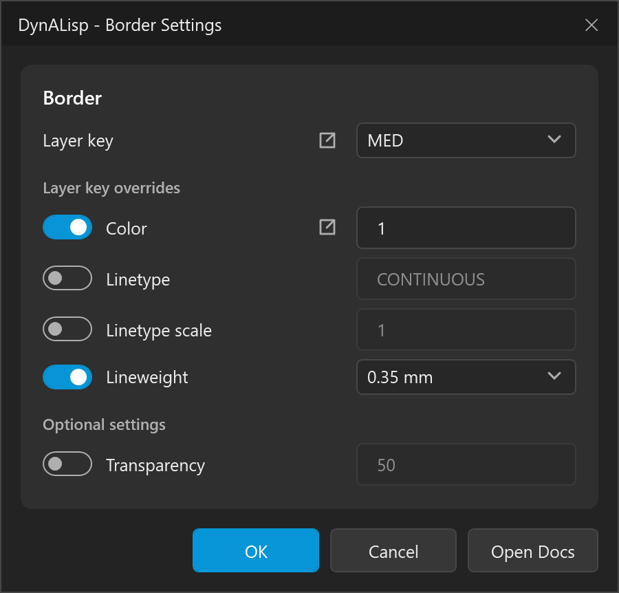

Border Settings
| Ouverte par | Le bouton ouvrir de Has a border, dans la zone Parameters de la fenêtre Quick Draw, et dans la fenêtre Assembly Presets pour une couche d'un assemblage |
Description
Choisissez le calque, la couleur, le type de ligne, l'épaisseur et la transparence du contour d'un préréglage de Quick Draw, ou d'une couche d'un assemblage.
Utilisation
- Dans Dessin rapide, cochez Has a border et cliquez le bouton carré à côté.
- Choisissez la clé de calque, cochez ce qui change et donnez sa valeur.
- Cliquez OK. Ce qui n'est pas coché suit le calque.
